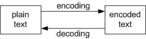
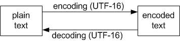

Another entry in an irregular series of posts about Unicode.
Typos fixed 2012-02-22. Thanks Anonymous, and Clinton, for reporting the typos.
This is a story about encoding and decoding, with a minor subplot involving Unicode.
As our story begins — on a dark and stormy night, of course — we find our protagonist deep in thought. He is asking himself “What is an encoding?”
What is an encoding?
The basic concepts are simple. First, we start with the idea of a piece of information — a message — that exists in a representation that is understandable (perspicuous) to a human being. I’m going to call that representation “plain text”. For English-language speakers, for example, English words printed on a page, or displayed on a screen, count as plain text.
Next, (for reasons that we won’t explore right now) we need to be able to translate a message in a plain-text representation into some other representation (let’s call that representation the “encoded text”), and we need to be able to translate the encoded text back into plain text. The translation from plain text to encoded text is called “encoding”, and the translation of encoded text back into plain text is called “decoding”.

There are three points worth noting about this process.
The first point is that no information can be lost during encoding or decoding. It must be possible for us to send a message on a round-trip journey — from plain text to encoded text, and then back again from encoded text to plain text — and get back exactly the same plain text that we started with. That is why, for instance, we can’t use one natural language (Russian, Chinese, French, Navaho) as an encoding for another natural language (English, Hindi, Swahili). The mappings between natural languages are too loose to guarantee that a piece of information can make the round-trip without losing something in translation.
The requirement for a lossless round-trip means that the mapping between the plain text and the encoded text must be very tight, very exact. And that brings us to the second point.
In order for the mapping between the plain text and the encoded text to be very tight — which is to say: in order for us to be able to specify very precisely how the encoding and decoding processes work — we must specify very precisely what the plain text representation looks like.
Suppose, for example, we say that plain text looks like this: the 26 upper-case letters of the Anglo-American alphabet, plus the space and three punctuation symbols: period (full stop), question mark, and dash (hyphen). This gives us a plain-text alphabet of 30 characters. If we need numbers, we can spell them out, like this: “SIX THOUSAND SEVEN HUNDRED FORTY-THREE”.
On the other hand, we may wish to say that our plain text looks like this: 26 upper-case letters, 26 lower-case letters, 10 numeric digits, the space character, and a dozen types of punctuation marks: period, comma, double-quote, left parenthesis, right parenthesis, and so on. That gives us a plain-text alphabet of 75 characters.
Once we’ve specified exactly what a plain-text representation of a message looks like — a finite sequence of characters from our 30-character alphabet, or perhaps our 75-character alphabet — then we can devise a system (a code) that can reliably encode and decode plain-text messages written in that alphabet. The simplest such system is one in which every character in the plain-text alphabet has one and only one corresponding representation in the encoded text. A familiar example is Morse code, in which “SOS” in plain text corresponds to
... --- ...
in encoded text.
In the real world, of course, the selection of characters for the plain-text alphabet is influenced by technological limitations on the encoded text. Suppose we have several available technologies for storing encoded messages: one technology supports an encoded alphabet of 256 characters, another technology supports only 128 encoded characters, and a third technology supports only 64 encoded characters. Naturally, we can make our plain-text alphabet much larger if we know that we can use a technology that supports a larger encoded-text alphabet.
And the reverse is also true. If we know that our plain-text alphabet must be very large, then we know that we must find — or devise — a technology capable of storing a large number of encoded characters.
Which brings us to Unicode.
Unicode
Unicode was devised to be a system capable of storing encoded representations of every plain-text character of every human language that has ever existed. English, French, Spanish. Greek. Arabic. Hindi. Chinese. Assyrian (cuneiform characters).
That’s a lot of characters.
So the first task of the Unicode initiative was simply to list all of those characters, and count them. That’s the first half of Unicode, the Universal Character Set. (And if you really want to “talk Unicode”, don’t call plain-text characters “characters”. Call them “code points”.)
Once you’ve done that, you’ve got to figure out a technology for storing all of the corresponding encoded-text characters. (In Unicode-speak, the encoded-text characters are called “code values”.)
In fact Unicode defines not one but several methods of mapping code points to code values. Each of these methods has its own name. Some of the names start with “UTF”, others start with “UCS”: UTF-8, UTF-16, UTF-32, UCS-2, UCS-4, and so on. The naming convention is “UTF-<number of bits in a code value>” and “UCS-<number of bytes in a code value>” Some (e.g. UCS-4 and UTF-32) are functionally equivalent. See the Wikipedia article on Unicode.
The most important thing about these methods is that some are fixed-width encodings and some are variable-width encodings. The basic idea is that the fixed-width encodings are very long — UCS-4 and UTF-32 are 4 bytes (32 bits) long — long enough to hold the the biggest code value that we will ever need.
In contrast, the variable-width encodings are designed to be short, but expandable. UTF-8, for example, can use as few as 8 bits (one byte) to store Latin and ASCII characters code points. But it also has a sort of “continued on the next byte” mechanism that allows it to use 2 bytes or even 4 bytes if it needs to (as it might, for Chinese characters). For Western programmers, that means that UTF-8 is both efficient and flexible, which is why UTF-8 is the de facto standardard encoding for exchanging Unicode text.
There is, then, no such thing as THE Unicode encoding system or method. There are several encoding methods, and if you want to exchange text with someone, you need explicitly to specify which encoding method you are using.
Is it, say, this.
Or this.

Or something else.
Which brings us back to something I said earlier.
Why encode something in Unicode?
At the beginning of this post I said
We start with the idea of a piece of information — a message — that exists in a representation that is understandable (perspicuous) to a human being.
Next, (for reasons that we won’t explore right now) we need to be able to translate a message in a plain-text representation into some other representation. The translation from plain text to encoded text is called “encoding”, and the translation of encoded text back into plain text is called “decoding”.
OK. So now it is time to explore those reasons. Why might we want to translate a message in a plain-text representation into some other representation?
One reason, of course, is that we want to keep a secret. We want to hide the plain text of our message by encrypting and decrypting it — basically, by keeping the algorithms for encoding and decoding secret and private.
But that is a completely different subject. Right now, we’re not interested in keeping secrets; we’re Python programmers and we’re interested in Unicode. So:
Why — as a Python programmer — would I need to be able to translate a plain-text message into some encoded representation… say, a Unicode representation such as UTF-8?
Suppose you are happily sitting at your PC, working with your favorite text editor, writing the standard Hello World program in Python (specifically, in Python 3+). This single line is your entire program.
print("Hello, world!")
Here, “Hello, world!” is plain text. You can see it on your screen. You can read it. You know what it means. It is just a string and you can (if you wish) do standard string-type operations on it, such as taking a substring (a slice).
But now suppose you want to put this string — “Hello, world!” — into a file and save the file on your hard drive. Perhaps you plan to send the file to a friend.
That means that you must eject your poor little string from the warm, friendly, protected home in your Python program, where it exists simply as plain-text characters. You must thrust it into the cold, impersonal, outside world of the file system. And out there it will exist not as characters, but as mere 1′s and 0′s, a jumble of dits and dots, charged and uncharged particles. And that means that your happy little plain-text string must be represented by some specific configuration of 1s and 0s, so that when somebody wants to retrieve that collection of 1s and 0s and convert it back into readable plain text, they can.
The process of converting a plain text into a specific configuration of 1s and 0s is a process of encoding. In order to write a string to a file, you must encode it using some encoding system (such as UTF-8). And to get it back from a file, you must read the file and decode the collection of 1s and 0s back into plain text.
The need to encode/decode strings when writing/reading them from/to files isn’t something new — it is not an additional burden imposed by Python 3′s new support for Unicode. It is something you have always done. But it wasn’t always so obvious. In earlier versions of Python, the encoding scheme was ASCII. And because, in those olden times, ASCII was pretty much the only game in town, you didn’t need to specify that you wanted to write and read your files in ASCII. Python just assumed it by default and did it. But — whether or not you realized it — whenever one of your programs wrote or read strings from a file, Python was busy behind the scene, doing the encoding and decoding for you.
So that’s why you — as a Python programmer — need to be able to encode and decode text into, and out of, UTF-8 (or some other encoding: UTF-16, ASCII, whatever). You need to encode your strings as 1s and 0s so you can put those 1s and 0s into a file and send the file to someone else.
What is plain text?
Earlier, I said that there were three points worth noting about the encoding/decoding process, and I discussed the first two. Here is the third point.
The distinction between plain text and encoded text is relative and context-dependent.
As programmers, we think of plain text as being written text. But it is possible to look at matters differently. For instance, we can think of spoken text as the plain text, and written text as the encoded text. From this perspective, writing is encoded speech. And there are many different encodings for speech as writing. Think of Egyptian hieroglyphics, Mayan hieroglyphics, the Latin alphabet, the Greek alphabet, Arabic, Chinese ideograms, wonderfully flowing Devanagari देवनागरी, sharp pointy cuneiform wedges, even shorthand. These are all written encodings for the spoken word. They are all, as Thomas Hobbes put it, “Marks by which we may remember our thoughts”.
Which reminds us that, in a different context, even speech itself — language — may be regarded as a form of encoding. In much of early modern philosophy (think of Hobbes and Locke) speech (or language) was basically considered to be an encoding of thoughts and ideas. Communication happens when I encode my thought into language and say something — speak to you. You hear the sound of my words and decode it back into ideas. We achieve communication when I successfully transmit a thought from my mind to your mind via language. You understand me when — as a result of my speech — you have the same idea in your mind as I have in mine. (See Ian Hacking, Why Does Language Matter to Philosophy?)
Finally, note that in other contexts, the “plain text” isn’t even text. Where the plain text is soundwaves (e.g. music), it can be encoded as an mp3 file. Where the plain text is an image, it can be encoded as a gif, or png, or jpg file. Where the plain text is a movie, it can be encoded as a wmv file. And so on.
Everywhere, we are surrounded by encoding and decoding.
Notes
I’d like to recommend Eli Bendersky’s recent post on The bytes/str dichotomy in Python 3, which prodded me — finally — to put these thoughts into writing. I especially like this passage in his post.
Think of it this way: a string is an abstract representation of text. A string consists of characters, which are also abstract entities not tied to any particular binary representation. When manipulating strings, we’re living in blissful ignorance. We can split and slice them, concatenate and search inside them. We don’t care how they are represented internally and how many bytes it takes to hold each character in them. We only start caring about this when encoding strings into bytes (for example, in order to send them over a communication channel), or decoding strings from bytes (for the other direction).
I strongly recommend Charles Petzold’s wonderful book Code: The Hidden Language of Computer Hardware and Software.
And finally, I’ve found Stephen Pincock’s Codebreaker: The History of Secret Communications a delightful read. It will tell you, among many other things, how the famous WWII Navaho codetalkers could talk about submarines and dive bombers… despite the fact that there are no Navaho words for “submarine” or “dive bomber”.
Excellent read, thanks for that. For further reading, I’d suggest Joel Spolsky’s article at http://www.joelonsoftware.com/articles/Unicode.html
Pulled together a lot of bits for me that had been floating around in my head. Thanks for writing this up, very nice work.
Very good blog post.
Just one small comment: In your first example you write about “26 upper-case letters”. Thus the number should be represented in upper-case letters instead of lower-case letters imho. (“SIX THOUSAND SEVEN HUNDRED FORTY-THREE”).
I strongly recommend this article: http://www.joelonsoftware.com/articles/Unicode.html
Thanks for reporting this. Fixed now.
can you explain again about the meaning of encoding and decoding in simple sentences? i still confused about it..thank you.
Roughly speaking, encoding is a kind of translation.
You can think of translation as a function translate that takes three arguments:
where
Here are some examples.
In the last example, we could move the second argument (the name of the old format) out of the argument list and into the function name. That means replacing the general translate function with two specialized functions: translate_spanish and translate_english like this.
And we could move the first argument (the value) out of the argument list by making our two functions into methods, like this.
Note that for this to work, our formats — our two languages — must be treated as two different types, in the same way that, say, int and str are types.
That means that if we try to do something like this, it will raise a TypeException becaue “uno” is not an English word.
OK. Let’s stop now for a minute and catch our breath.
At this point, we understand translation. So what are “encoding” and “decoding”?
“Encoding” and “decoding” refer to the translation process, when it is being done in a situation where one of the formats is considered to be the primary (or “plaintext”) format. In such a situation:
So let’s arbitrarily say that English is the plain-text format, and Spanish is the encoded format. So instead of talking about “translating English into Spanish”, we can talk about “encoding English into Spanish”. And instead of talking about “translating Spanish into English”, we can talk about “decoding Spanish into English”.
And we can change our function names. We can replace translate_english with encode and replace translate_spanish with decode.
So now, let’s talk about Unicode encoding.
Let’s use our discussion of English/Spanish translation as a model. We can start with this.
We replace the “English” type with a “string” type, and we replace the “Spanish” type with the “bytes” type. And our English/Spanish dictionary will be replaced by the rules of the Unicode UTF-8 encoding.
And there you have it.
So in response to your request, here is the best that I can do in the way of simple sentences.
“Encoding” and “decoding” simply mean “translation” in a situation where one of the formats is considered to be the “plain-text” format.
In such a situation: